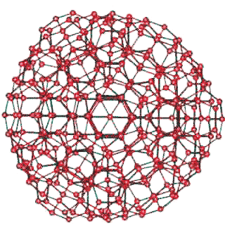

As well as forming icosahedral water clusters, 14-water-molecule water tetrahedra can form large regular, and relatively undistorted, a clusters around other clathrate cavities ('Bucky-ice' structures such as the tetrakaidecahedral (51262) and hexakaidecahedral (51264) cavities are found in crystalline gas clathrate structures CS-I and CS-II, respectively). Such structuring allows icosahedral-like network structuring around larger guest molecules, as the cavities have radii 4.33 Å and 4.68 Å (compare with pentagonal dodecahedral cavities (512) at 3.91 Å). They are also capable of forming an infinite network, without further hydrogen-bond distortion (see below) in the same way gas hydrates form regular crystalline solids. Although both non-crystalline ES clusters and crystalline gas-containing clathrates have similar inner-shell water clustering, the topology of the outer clustering is very different. The lack of evidence for the partial formation of crystalline clathrates in liquid water containing clathrate-forming solutes cannot, therefore, be used to indicate the absence of formation of other clathrate-structuring as suggested by some authors.
The network of the 336-molecule cluster

Twenty-eight 14-molecule water tetrahedra arranged around the clathrate-II cavity, given below. Only the 392 oxygen atoms are shown.
The network of the 24-molecule cluster
51262 cavity
51264 cavity
For interactive Figures, see Jmol.
Clathrate-I-like crystal structure containing
280-molecule water icosahedra
The use of such clathrate cages in the formation of solid gas-hydrate ices is shown on another page.
280-molecule icosahedra plus 336-molecule tetrakaidecahedra (51262) can be arranged in a similar cubic network to give a fully tessellated structure. The oxygen atoms of water in the unit cell of such a structure are shown right. It is not known whether such a structure exists, as it does involve some distortion with standard deviations of 2.4% in the O···O nearest neighbor distances and 4.4% in the tetrahedral hydrogen-bonded angles.
For interactive Figures, see Jmol.
a The hydrogen-bond angles and bond lengths are slightly more distorted (51264 > 51262) than in icosahedral clusters surrounding dodecahedral 512, cavities, but not prohibitively so. [Back]
Home | Site Index | Icosahedral water clusters (network Jmol) | Gas clathrate ices | LSBU | Top
This page was established in 2004 and last updated by Martin Chaplin on 28 June, 2021